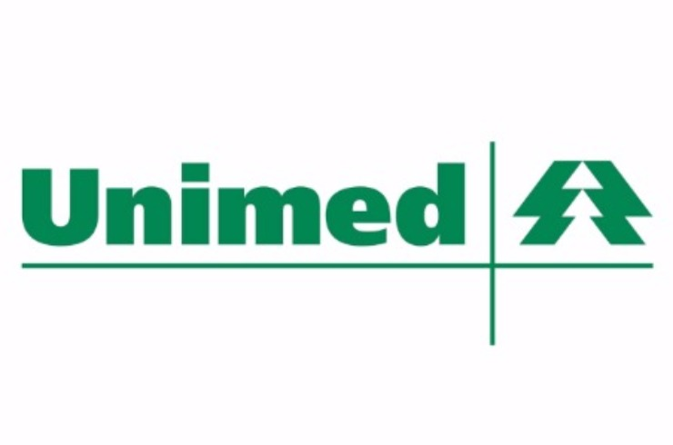
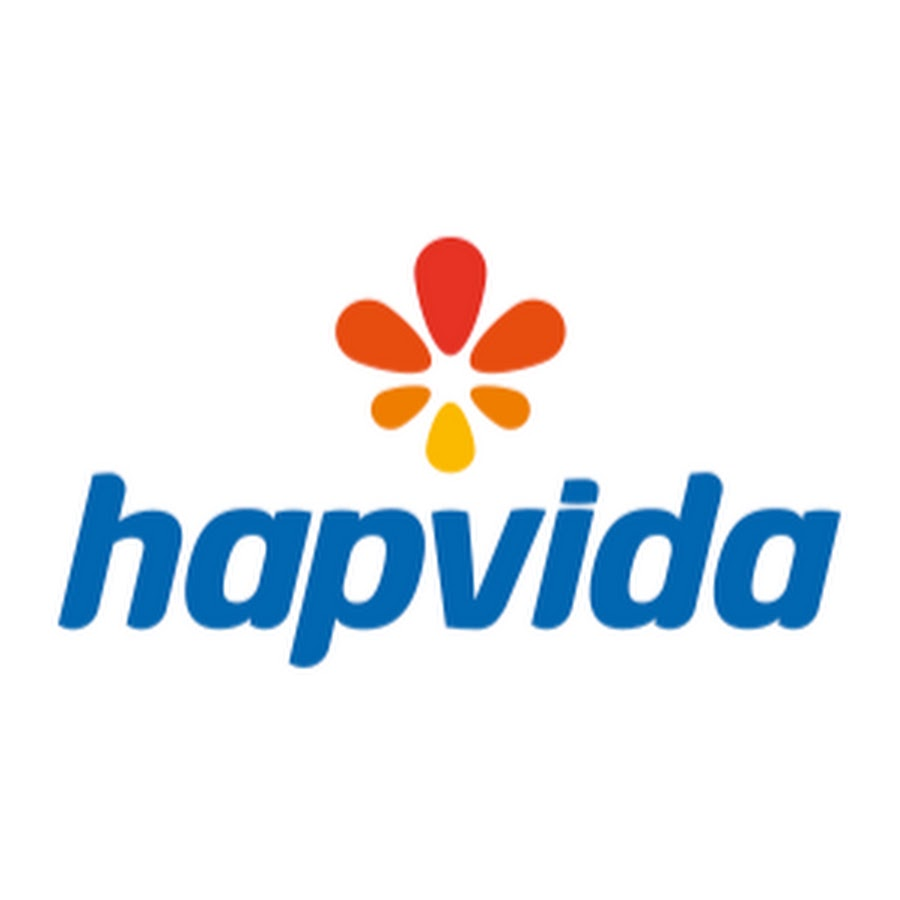
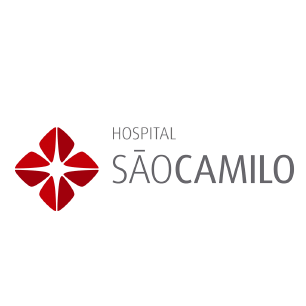

História e Compromisso com Sobral
Fundada em 1995, o São Lucas Medical Center é referência de confiança médica e dedicação ao bem-estar da população da Região Norte do Ceará.
Uma História Construída com Ética e Respeito à Vida
A fundação do São Lucas Medical Center aconteceu no ano de 1995 por iniciativa dos renomados médicos Dr. Cadmo Silton, Dr. Gerardo Cristino e Dr. José Gerardo. Desde o início de suas atividades, a instituição sempre funcionou no mesmo prédio tradicional no Centro de Sobral, tornando-se um patrimônio de cuidado e saúde na cidade.
Hoje, nossa instituição orgulha-se de contar com uma equipe multidisciplinar completa: 12 funcionários dedicados no apoio e recepção, 10 médicos especialistas de diversas áreas, 6 psicólogos clínicos e 4 dentistas.
Nosso atendimento estende-se de segunda a sexta-feira, das 06:00 às 20:00 horas, permitindo agilidade e flexibilidade de horários. Oferecemos valores acessíveis em consultas e exames particulares (com valores em média de R$ 250,00 a R$ 350,00 para procedimentos especializados), além de ampla cobertura pelos principais planos de saúde.
Galeria de Fotos da Clínica
Conheça as instalações preparadas para oferecer conforto, biossegurança e acolhimento aos nossos pacientes e acompanhantes.
Convênios Aceitos
Consulte a cobertura com a sua operadora ou aproveite as condições especiais para atendimento particular.



Como Chegar
Av. Dom José, 800 - Centro, Sobral - CE (Próximo à Praça São João).
Dados de Contato
Endereço
Av. Dom José, 800 - Centro, Sobral - CE, 62010-290
Ponto de Referência: Próximo à Praça São João
Horário de Funcionamento
Segunda a Sexta-feira: 06:00 às 20:00
Telefones para Contato
(88) 3677-2300 • (88) 3677-2315